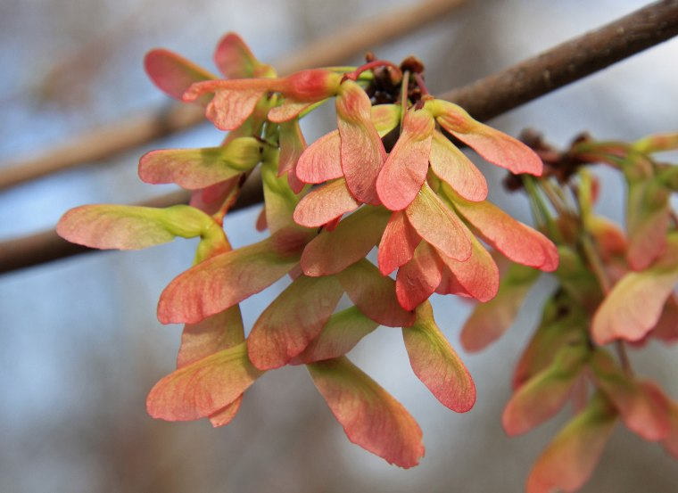

Maple spinner
Spin

Can you make one paper wing spin just by letting it fall?
Customize
- Clip stations
- A / B
- Wings
- 1
Fold guide
What you need The maple wing template, scissors and one small metal paper clip. A helper can cut the outline.

-
Step 1 / 4
Cut along the solid line around the printed wing. Keep the wing and its rounded root in one piece.
-
Step 2 / 4
Slide the clip onto the short edge at dot A. Its long side should lie flat on the paper.
-
Step 3 / 4
With the printed side up, lift the dotted long edge slightly with your fingers to give the wing a shallow curl.
-
Step 4 / 4
Hold the wing at shoulder height with the clip pointing down. Open your fingers. Watch from above for a complete turn.
Try this flight test
Drop five times from the same height. Count full turns, including zero. Move the same clip to B and repeat. Keep the curl and release the same.
The clip shifts the balance toward the root. As the wing falls, air pushes on its curved surface and can make it turn around the heavy end.
If it falls straight, try a little more curl. Start both sets again with that curl.
Design origins


Gregory Vogt · NASA Glenn
Gregory Vogt’s NASA activity follows a winged maple seed. Look for the heavy seed at the base, where the paper model carries its clip.
Model source ↗Print the pattern
Print at 100% (Actual size) and check the 50 mm scale on the sheet with a ruler.
See the other models
-

Ring glider
Glide
-

Williams tandem glider
Glide